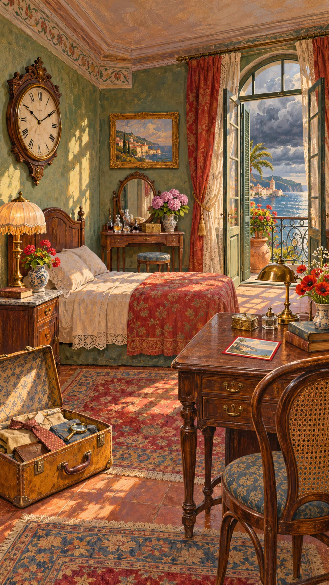

Les objets mentent. Les souvenirs aussi.
À 21 h 13, Mara Varela disparaît. Sa chambre est intacte. Les témoins se contredisent. Mais certains objets se souviennent de ce que personne ne veut raconter.

Une chambre trop bien rangée pour un départ précipité.